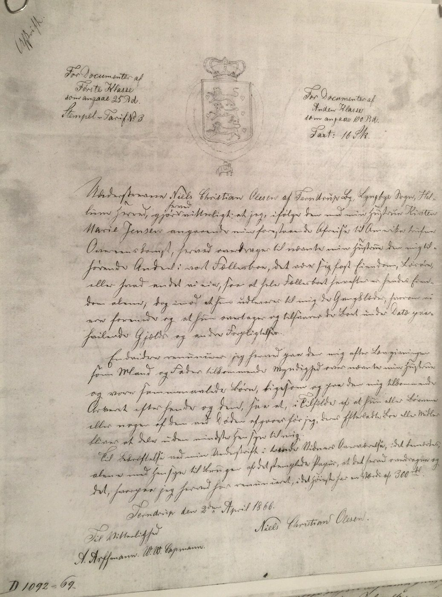
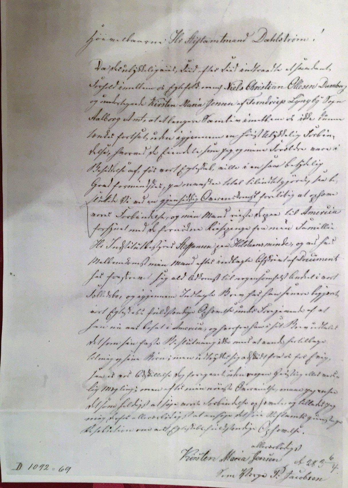
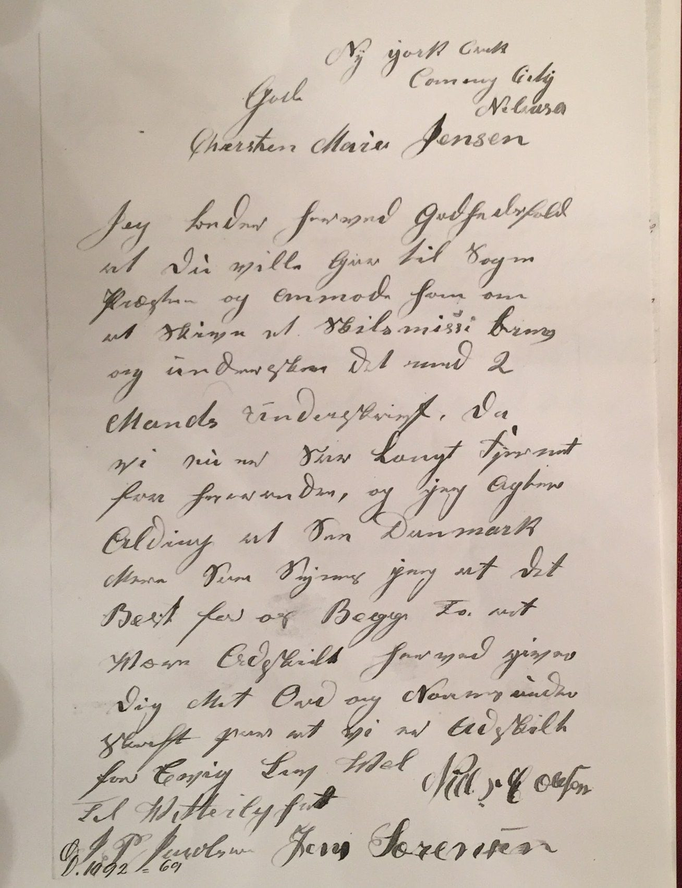

Chapter 5
The break
1865–1870
The times: leaving Denmark in the 1860s. The Homestead Act of 1862 offered American land free to settlers who lived on it for five years.1 Danish emigration grew from about 60 people a year before 1850, rose through the 1870s and peaked in the early 1880s. Emigrants sailed from Copenhagen or, especially from Jutland, from Hamburg.2 Many Scandinavians crossed the North Sea to Hull, took the train to Liverpool and sailed for America from there.3 Leaving a marriage was harder. Divorce had long been allowed only for adultery, desertion or impotence. From 1800 the county governor (amtmand) could grant a separation, and from 1827 a divorce after three years apart.4 A wife left to manage alone might have to turn to poor relief. Under the 1849 constitution those who received it lost the vote, and they could be refused permission to marry until it was repaid.5
The Papers of the Break
Within about a year of his father-in-law's death, Niels Christian had signed away his place in the family. The papers in the tree for these years tell the story.6
| Year | Document in the tree | What it shows |
|---|---|---|
| 1866 | Kirsten farm operation | Kirsten Marie formally takes over running the farm |
| 1866 | NCO gives up all rights to the farm (three pages) | He renounces all rights to the farm and to any inheritance from it |
| 1866 | NCO gives up parental rights | He gives up his rights over the four children |
| 1867 | Landsarkivet journal number | Archive reference for the case file |
| 1868 | Kirsten I and Kirsten II | Two letters or petitions from Kirsten Marie |
| Undated (by early 1869) | NCO asks for divorce | His letter from New York Creek, Nebraska, asking for a divorce (see below) |
| Early 1869 | Kirsten's petition to the Stiftamtmand (journal mark D 1092-69) | She asks for the marriage to be dissolved |
| 23 May 1869 | Kirsten's letter from Terndrup | She asks for her absent husband to be summoned to court |
The research notes describe 1863–66 as a period of conflict with his in-laws. His father-in-law appears to have documented that Niels Christian was barred from managing the farm. The notes list the district court's mortgage, police and justice records as the places to look.7 Kirsten Marie's own petition, below, names the fear behind the break: that the marriage would consume the means she and her parents had brought into it. Whether that meant debt, poor management or something else is not yet known.
What he signed. A copy of the agreement survives in the Stiftamt's file. Dated at Terndrup on 2 April 1866 and signed "Niels Christian Olesen" before two witnesses, A. Arffmann and W. W. Capmann [?], it reads in translation: "I, the undersigned Niels Christian Olesen of Terndrup By, Lyngby Sogn, Hellum Herred, declare that, following the agreement made with my wife Kirsten Marie Jensen concerning my forthcoming departure for America, I hereby make over to my said wife my share in our joint estate, be it land, movable goods or whatever else we own, so that the whole estate is henceforth hers alone; in return she is to hand over to me the clothes we have agreed upon, and she takes over and answers for the debts and other obligations resting on the estate at this date." He went on to renounce "the authority that the law gives me as husband and father" over his wife and children, and any right to inherit from them. A note for the stamp duty put the value of what he gave up at no more than 300 rigsdaler. The document shows that he was still at Terndrup on 2 April 1866.6


In 1866 he left for America, alone, now signing himself simply Niels Christian Olesen. He was 44.8 One note in the tree dates his departure to about 1867.9
The Request for a Divorce
The separation in Kirsten's words. Early in 1869 Kirsten Marie petitioned the Stiftamtmand, Frederik Dahlstrøm, the royal governor of the Aalborg diocese, to end the marriage. She wrote that relations between her and her husband had become such that they could not go on living together without the means she and her parents had owned before the marriage being greatly reduced, perhaps destroyed altogether. By mutual agreement they had therefore separated for the time being. Her husband had travelled to America with the necessary travel money from her family, the institute director Steffensen at Holsteinsminde: her uncle Anders Stephansen. Through Stephansen's mediation he had renounced any claim to a share in their joint estate. In a later letter he had asked for the marriage to be dissolved completely, saying he was now settled in America and had firmly decided never to return to her and the children. The separation had taken place without any mediation by church or state. She signed "by guardian P. Jacobsen".10


His own letter. The letter she enclosed survives with her petition. It is undated and headed "Ny York Creek, Cuming City, Nebraska": the creek that runs past his later homestead in Grant Township. Addressed to "Gode Chersten Marie Jensen", it reads in translation:
I hereby kindly ask that you go to the parish priest and ask him to write a letter of divorce, and have it signed by two men. Since we are now so far apart, and I intend never to see Denmark again, I think it best for us both that we are separated. I hereby give you my word and my signature that we are separated forever. Farewell. Niels C. Olesen
Two witnesses signed below his name.11


Towards a court. The Stiftamt appears to have entered her petition in its journal on 6 April 1869. Four days later, on 10 April, the district office at Nørgaard, near Bælum, the seat of the district judge (herredsfoged) for Hellum and Hindsted herreder, passed on to Kirsten Marie the Stiftamt's answer: the marriage could be dissolved by a court judgment. On 23 May 1869, writing from Terndrup, she asked the Stiftamt's permission to have her husband, "who has travelled away to America", summoned to appear in court.12 No judgment has yet been found. The P. Jacobsen who signed as her guardian was evidently the man who wrote to Anders Stephansen from Uranienborg in July 1865 (see chapter 3).13
The Family He Left Behind
The family he left behind did badly. According to the tree, the farm fell into mismanagement without him and the family became poor.9 Kirsten Marie died at Terndrup on 25 June 1874, aged 49, and was buried on 1 July. The burial register calls her "Husmand Niels Damborgs Hustru", the wife of the smallholder Niels Damborg. Her estate was settled at the herred office only on 28 September 1880.14 Her mother Karen died in 1877.15 Ulrica was sent to Holsteinsminde, the children's home her great-uncle had founded. She was confirmed there in 1877.16
Click here for notesHide notes16 notes
Abbreviation: DFT = Damborg family tree, "20130316 Damborg", Ancestry.com Member Trees, GEDCOM export of 26 May 2026, including its facts, research notes and attached images. Short titles refer to the Works Cited.
- 1National Archives, “Homestead Act (1862)”; NebraskaStudies.org, “Homestead Act Signed” (160 acres to a head of household who lived on the land five years). National Archives, "Homestead Act (1862)," Milestone Documents (eligibility, including a declaration of intention; ten-dollar fee; five years' residence; proof by two witnesses; 160 acres at $1.25 or 80 acres at $2.50 an acre). ↩
- 2FamilySearch Research Wiki, “Denmark Emigration and Immigration” (about 60 emigrants a year in 1820–1850; increase in the 1870s, peak in the early 1880s; ports including Copenhagen and Hamburg; Copenhagen Police emigration records from 1869). ↩
- 3Norway Heritage, “Migration from Northern Europe to America via the Port of Hull, 1848–1914”; BYU Studies, "Latter-day Saint Scandinavian Migration through Hull, England, 1852–1894" (the North Sea crossing; the 140-mile train journey to Liverpool, up to six hours; waits in Liverpool of days to weeks before 1869). ↩
- 4Rigsarkivet, “Skilsmissesager – Kom godt i gang!” (grounds of adultery, desertion and impotence; separation by the county governor from 1800; divorce after three years' separation from 1827). ↩
- 5Leonora Lottrup Rasmussen, “Voices of the Poor: Negotiations of Social Rights in Denmark, 1849–1891” (recipients excluded from the vote under the 1849 constitution; right to marry could be refused until relief was repaid). ↩
- 6DFT, Niels Christian Olesen: attached images titled “1866 Kirsten farm operation”, “1866 NCO gives up all rights I–II”, “1866 NGO give up all right to Farm”, “1866 NCO Give up Parential rights”, “1867 Lands archivet jr number”, “1868 Kirsten I–II”, “1869 Kirsten ask for help”, “1869 Kirsten about NCO conscripted or”, “1870 NCO ask for divorce”; emigration fact 1866 and note. The descriptions in the table are based on these titles. Niels Christian Olesen, declaration of renunciation, Terndrup, 2 April 1866, copy ("Afskrift") on stamped paper, Stiftamt file D 1092-69, witnessed by A. Arffmann and W. W. Capmann [?] (photographs supplied by the family; translation for this biography, some words uncertain). ↩a ↩b
- 7DFT, Niels Christian Olesen: research timeline note (1863–1866 conflict with the in-laws; suggested searches in the Hellum-Hindsted district court records). ↩
- 8DFT, Niels Christian Olesen: emigration fact 1866 and research timeline (“Han rejser alene og underskriver sig nu kun som Niels Christian Olesen”). Passenger list of s.s. The Queen, Liverpool and Queenstown to New York, sworn 2 May 1866 by Frederick Grogan, master (burden 2,811 tons), passenger no. 884, Niels Olsen, 44, labourer, steerage, entered with the passengers around him as from Germany: New York, Passenger Lists, 1820–1920 (FamilySearch), from NARA M237, roll 264, image 253; wrapper "Str. The Queen, May 2/66, L'pool", no. 397 (images supplied by the family). On the railroad: "Cedar Rapids and Missouri River Railroad," Wikipedia (reached Council Bluffs in January 1867); Boone County IAGenWeb, "Railroad history" (track to Boone, 1864–65); Historical Society of Pottawattamie County, "Railroads in Council Bluffs" (stage lines before the railroad). ↩
- 9
- 10Kirsten Maria Jensen to Stiftamtmand Dahlstrøm, undated petition [early 1869], archive mark D 1092-69, signed "ved Værge P. Jacobsen" (photographs supplied by the family). Summary and quotations translated for this biography; some words are uncertain. DFT image titles "1869 Kirsten ask for help" and "1868 Kirsten I–II" may refer to these papers. Frederik Dahlstrøm as stiftamtmand at Aalborg: Trap Danmark, “Aalborghus” (trap.lex.dk). ↩
- 11Niels C. Olesen to Kirsten Marie Jensen, undated letter headed "Ny York Creek, Cuming City, Nebraska", archive mark D 1092-69, enclosed with her petition (Aalborg Amt, journalsager, archive signature B3-5454) (photograph supplied by the family). Translation for this biography; some words are uncertain. DFT titles the image "1870 NCO ask for divorce". New York Creek is marked beside his land on the 1884 Washington County atlas. ↩
- 12Kirsten Maria Jensen to the Stiftamt, Terndrup, 23 May 1869 (photograph supplied by the family), referring to the Stiftamt's letter communicated to her through the district office (Herreds-contoiret) at Nørgaard on 10 April 1869. Nørgaard as the seat of the herredsfoged for Hellum-Hindsted: Danske Herregårde, “Nørgaard” (danskeherregaarde.dk). The petition bears the endorsement "A 283, 6/4", probably its entry in the Stiftamt's journal on 6 April 1869. ↩
- 13P. Jacobsen to Hr. Stephansen, undated letter fragment (photograph supplied by the family). Dorothea Stephansen died in October 1865: Dansk Biografisk Leksikon, “Anders Stephansen”; Dansk Kvindebiografisk Leksikon, “Dorothea Stephansen.” ↩
- 14DFT, Kirsten Marie Jensen: death 1 July 1874, Terndrup (Lyngby church book, Arkivalier Online). Hellum-Hindsted herreder, probate register (skifteprotokol), B41-5342, pp. 200–201: settlement of 28 September 1880 of the estate of Kirsten Marie Jensen; the heirs her four children, with Thomas Nielsen of Terndrup as Ulrica's guardian. ↩
- 15DFT, Karen Steffansdatter: death 10 October 1877, burial 18 October 1877, Lyngby Sogn. ↩
- 16DFT, Ulrica Christine Nielsen: event “Holsteinsminde” and confirmation 1877, Holsteinsminde, Fuglebjerg (Rigsarkivet, epid 17223794). On Holsteinsminde as a home for children of both sexes: lex.dk, “Holsteinsminde.” ↩